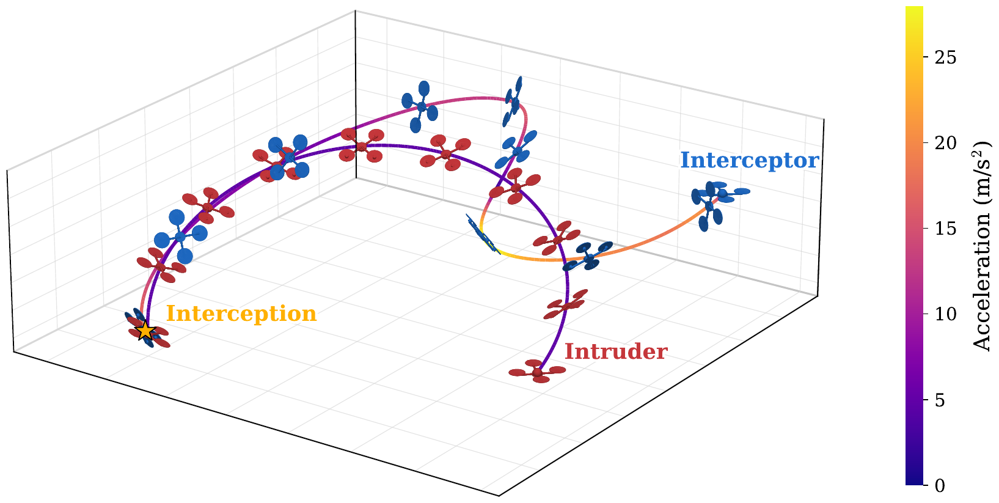
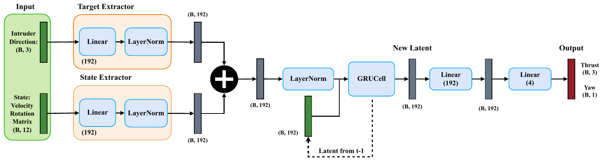
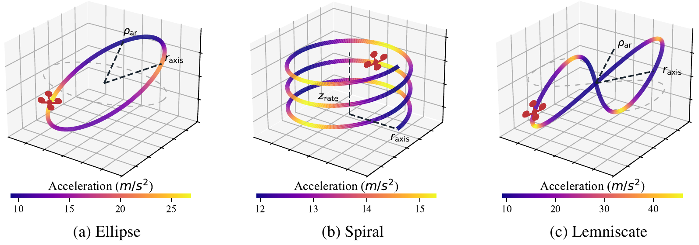
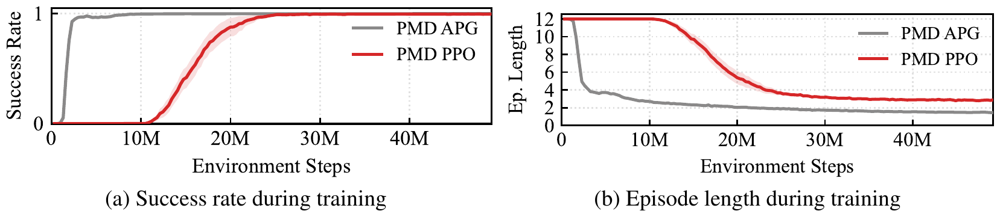
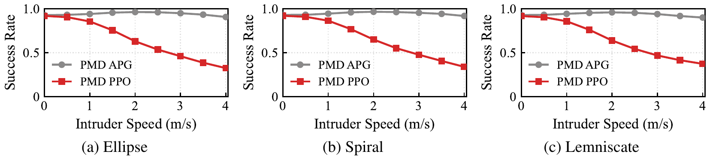
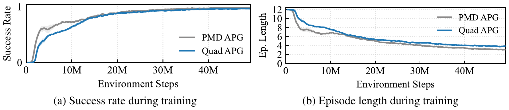
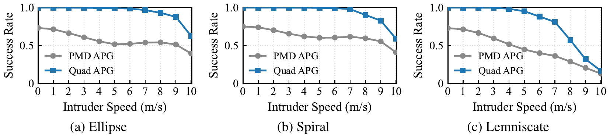
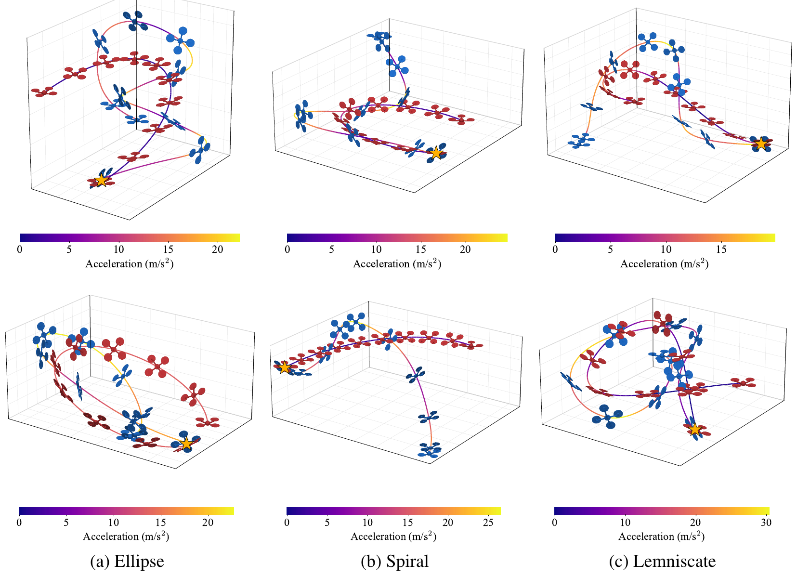
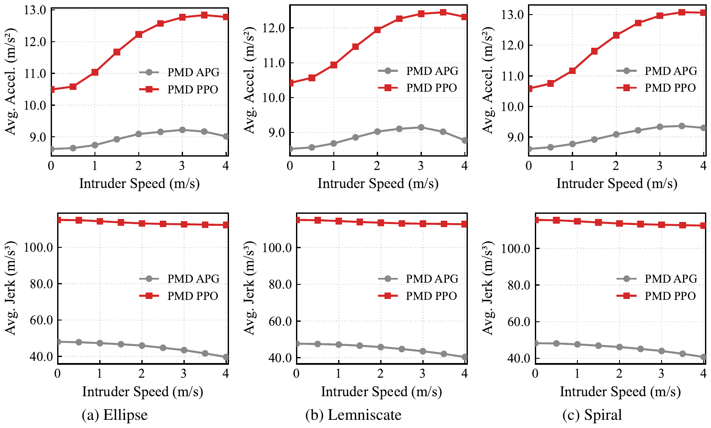
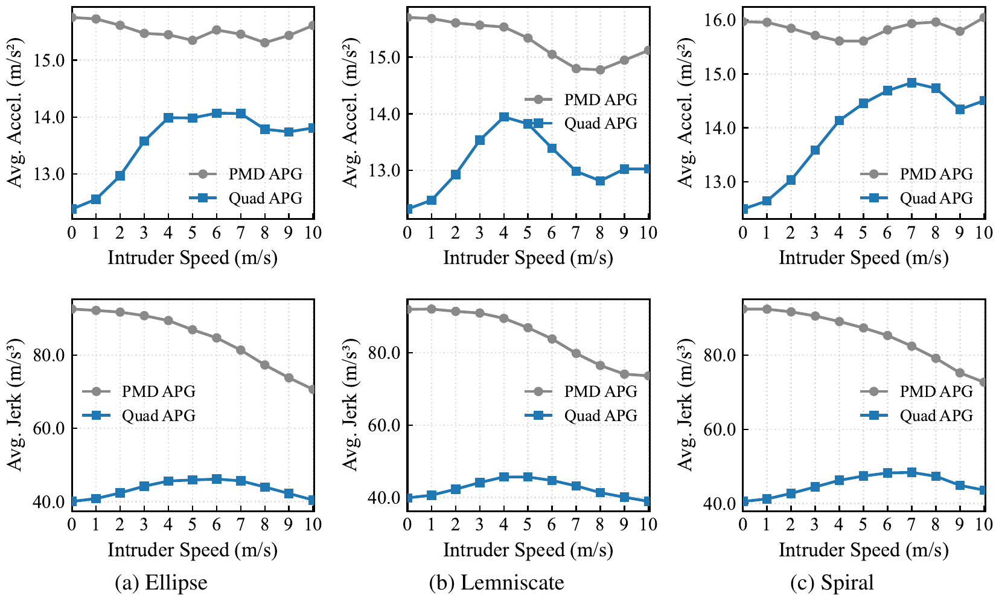

| Title | Learning Agile Intruder Interception using Differentiable Quadrotor Dynamics（基于可微分四旋翼动力学的敏捷入侵者拦截学习） |
| Authors | Michael Anoruo†,*、Xiaoyu Tian†,*（共同一作），Abhishek Rathod†、Timothy Naudet§、Thomas Canchola§、Eric Sturzinger§、Kshitij Goel†、Wennie Tabib† |
| Affiliation | †. 卡内基梅隆大学（Carnegie Mellon University，rislab 实验室）；§. 人工智能集成中心（Artificial Intelligence Integration Center, AI2C） |
| Venue | arXiv preprint，2026 年 7 月 2 日，arXiv:2607.02472v1 [cs.RO]，17 页（含附录） |
| DOI / Links | arXiv:2607.02472 | 项目主页：rislab.github.io/projects/catchrl.html | 开源代码：github.com/rislab/catchrl |
| Keywords | Aerial Robots、Deep Reinforcement Learning、Interception（作者标注；但方法本质是「解析策略梯度 + 可微分物理」，并非采样式 RL，见 §6.4） |
| TL;DR | 用仅含 3D 单位方向向量（无距离、无相对位置）的被动视觉观测，通过解析策略梯度（APG）反向传播穿过完整 6-DoF 四旋翼动力学（刚体动力学 + 二次阻力 + 转子一阶延迟 + RK4 积分），学习拦截机动。损失函数由平行导引（parallel navigation）的几何量分解成 6 项（视线对齐 + 接近速度 + 加速度/jerk/限速平滑 + 机头对准），全部逐 step 稠密可微。在 0–10 m/s 的入侵者速度扫描下，用完整四旋翼动力学训练的策略比点质量模型（PMD）平均高 30%（椭圆/螺旋/双纽线三类轨迹上分别高 37% / 33% / 31%）。图 7 显示 Quad APG 在 ≤5 m/s 时成功率接近 100%，8 m/s 时约 58%–97%（双纽线最差、椭圆最好），10 m/s 降到 15%–65%；同条件下 PMD APG 从 0 m/s 的约 72% 一路降到 10 m/s 的 15%–40%。注意：正文另有「8 m/s 时约 60%（PMD 约 30%）」的表述，与图 7 曲线口径不一致（见 §9.1）。训练耗时 137 分钟（RTX 5090），代码开源。 |
| Inspiration Source | What Insight It Inspired | Type |
|---|---|---|
| 平行导引 / 比例导引（Yuan 1948, Homing and Navigational Courses of Automatic Target-Seeking Devices）——导弹制导的经典律 | 把「拦截」从「到达某个点」的导航目标，改写为两个几何标量：视线角漂移 $m_t=\sin\angle(d_t, v_{rel,t})$ 与接近速度 $v_{c,t}=-\hat{d}_t^{\top}v_{rel,t}$。这一步把稀疏的「成功/失败」变成了稠密的可微监督，是整篇论文能成立的关键 | 数学 / 目标 |
| APG（Wiedemann et al. 2023）与可微分物理导航（Zhang et al. 2025, Nature Machine Intelligence） | 梯度可以直接穿过物理模型回到策略参数，无需采样估计策略梯度（零阶、高方差）。前人用它做「导航到设定点」，本文把它推到动态目标拦截这一强耦合任务，并顺手做了「模型复杂度该选多少」的消融 | 方法 |
| 非对称 Actor-Critic / 特权信息学习（privileged information；Lee et al. 2025 用特权信息做四旋翼导航） | 训练时把入侵者的真值位置与速度只用于算损失，绝不进入策略观测。既保证推理时只用 bearing，又让损失可以精确计算几何量——「特权信息放损失、不放输入」的一个干净的 APG 版本 | 训练策略 |
| Bearing-only 目标运动分析（TMA）/ 可观测性理论——单目纯方位测距的尺度模糊 | 承认距离不可观测，转而让 GRU 在时序上「积分」方位变化：本机机动 → 方位变化率 → 三角化出距离与横向速度。这解释了为什么必须用 RNN 而不是 MLP，也解释了为什么入侵者「匀速」对本文是重要的简化 | 估计理论 |
| 控制受限的动力学可行性检验（推力上限、$a_z\ge -g$ 类约束） | 评估用的螺旋/双纽线轨迹不能随便采样——必须用四旋翼模型反解「这条轨迹到底飞不飞得出来」（$A_{\max}=\eta N_m F_m/m$，$\eta=0.6$）。否则「失败」可能只是任务本身不可行，评估结论会被污染 | 实验设计 |
flowchart TB
subgraph PERCEPT["感知层 · 被动视觉 (推理时)"]
direction LR
CAM["多相机 360° 覆盖 · 被动 RGB"]
DET["目标检测器 (YOLO 类) → 像素坐标"]
BEAR["单位方向向量 d̂ ∈ S² (机体/起始帧)"]
end
subgraph STATE["本体状态"]
direction LR
VEL["线速度 v_t · 3 维"]
ROT["旋转矩阵 R_t · 9 维 (body → start frame)"]
end
subgraph POLICY["策略网络 · 192 维 GRU"]
direction LR
ENC1["Target Encoder: Linear 192 + LayerNorm"]
ENC2["State Encoder: Linear 192 + LayerNorm"]
SUM["逐元素相加 (B,192)"]
GRU["GRUCell · 192 隐单元 · 跨时间积分 bearing"]
HEAD["Linear 192 → Linear 4"]
ACT["动作: a_cmd (3) + ψ (1)"]
end
subgraph CTRL["低层控制 (机载)"]
direction LR
PD["PD 姿态/角速率控制器"]
MIX["混控矩阵 → 四转子转速指令 Ω_cmd"]
LAG["转子一阶延迟 τ_r = 0.0186 s"]
THR["二次推力模型: F_i(Ω_i)"]
end
subgraph PHYS["可微分物理 (训练时)"]
direction LR
RIGID["刚体动力学 [p,v,q,ω] · 阻力 d(v)"]
RK4["RK4 定步长积分 Δt_sim = 2.5 ms"]
STATE_OUT["下一状态 x_{t+1}"]
end
subgraph LOSS["特权损失 (仅训练时可见真值)"]
direction LR
LOS["视线对齐: ‖d̂ × v̂_rel‖"]
CLOSE["接近速度: d̂ᵀ v_rel"]
REG["加速度 / jerk / 限速 / 偏航"]
BACK["BPTT → ∇θ L (解析一阶梯度)"]
end
CAM --> DET --> BEAR
BEAR --> ENC1
VEL --> ENC2
ROT --> ENC2
ENC1 --> SUM
ENC2 --> SUM
SUM --> GRU --> HEAD --> ACT
ACT --> PD --> MIX --> LAG --> THR --> RIGID
RIGID --> RK4 --> STATE_OUT
STATE_OUT -.->|"下一控制步"| STATE
STATE_OUT --> LOSS
LOS --> BACK
CLOSE --> BACK
REG --> BACK
BACK -.->|"参数更新"| POLICY
classDef percept fill:#fef7ed,stroke:#f59e0b,stroke-width:2px,color:#92400e
classDef stateC fill:#e6faf8,stroke:#14b8a6,stroke-width:2px,color:#0f766e
classDef policyC fill:#e8f0fe,stroke:#3b82f6,stroke-width:2px,color:#1d4ed8
classDef ctrlC fill:#e6f7ee,stroke:#10b981,stroke-width:2px,color:#047857
classDef physC fill:#f0ebfd,stroke:#8b5cf6,stroke-width:2px,color:#6d28d9
classDef lossC fill:#ffeaf0,stroke:#f43f5e,stroke-width:2px,color:#be123c
class CAM,DET,BEAR percept
class VEL,ROT stateC
class ENC1,ENC2,SUM,GRU,HEAD,ACT policyC
class PD,MIX,LAG,THR ctrlC
class RIGID,RK4,STATE_OUT physC
class LOS,CLOSE,REG,BACK lossC
flowchart TB
subgraph OBS["① 观测构造 (start frame)"]
direction LR
O1["d̂_t = (p_tgt − p_agt)/‖p_tgt − p_agt‖"]
O2["v_t · R_t (body → start)"]
O3["o_t = [v_t, R_t, d̂_t] · 3+9+3"]
end
subgraph FWD["② 策略前向 (可微)"]
direction LR
F1["两个 MLP 编码器 → 各 192 维"]
F2["相加 → GRU h_t = f(h_{t−1}, z_t)"]
F3["192 隐藏层 + 线性头 → a_cmd, ψ"]
F4["PD 控制器 → 期望姿态 + 总推力"]
end
subgraph SIM["③ 可微分动力学 (每控制步 8 个 RK4 子步)"]
direction LR
S1["Ω̇ = (Ω_cmd − Ω)/τ_r"]
S2["F_i = f2 Ω_i² + f1 Ω_i + f0 ; τ = 混控"]
S3["v̇ = R(f + d(v))/m − g ẑ ; ω̇ = J⁻¹(τ − ω×Jω)"]
S4["RK4 积分 → x_{t+1}"]
end
subgraph LOSS["④ 特权损失 (逐 step)"]
direction LR
L1["L_align = ‖d̂ × v̂_rel‖"]
L2["L_close = d̂ᵀ v_rel"]
L3["L_acc + L_jerk + L_vmax + L_yaw"]
L4["L_t = Σ λ_i L_i"]
end
subgraph BWD["⑤ BPTT + 更新"]
direction LR
B1["∂L/∂x_T → 沿 64 步回传"]
B2["穿过 RK4 / 阻力 / 转子延迟 (全部可微)"]
B3["∂L/∂θ → AdamW + 梯度裁剪 5.0"]
B4["学习率 1.64e-3 → 5e-4"]
end
OBS --> FWD --> SIM --> LOSS --> BWD
BWD -.->|"θ 更新"| FWD
SIM -.->|"冻结已终止的并行环境 · 同步更新"| FWD
S4 -.->|"x_{t+1}"| OBS
classDef obsC fill:#fef7ed,stroke:#f59e0b,stroke-width:2px,color:#92400e
classDef fwdC fill:#e8f0fe,stroke:#3b82f6,stroke-width:2px,color:#1d4ed8
classDef simC fill:#f0ebfd,stroke:#8b5cf6,stroke-width:2px,color:#6d28d9
classDef lossC fill:#ffeaf0,stroke:#f43f5e,stroke-width:2px,color:#be123c
classDef bwdC fill:#e6f7ee,stroke:#10b981,stroke-width:2px,color:#047857
class O1,O2,O3 obsC
class F1,F2,F3,F4 fwdC
class S1,S2,S3,S4 simC
class L1,L2,L3,L4 lossC
class B1,B2,B3,B4 bwdC
flowchart TD
subgraph GEN["阶段 0: 评估轨迹池生成 (Algorithm 1)"]
direction LR
G1["参数曲线 p(s)=c0+R_tilt·h(s)+z(s)ẑ"] --> G2["解析加速度 a(s) · 曲率 κ(s)"]
G2 --> G3["可行性: ‖a+gẑ‖ ≤ A_max · a_z ≥ −βg · v²κ ≤ g"]
G3 --> G4["拒绝采样 → 最远点选择 → 正反向分裂"]
end
subgraph TRAIN["阶段 1: APG 训练 (512 并行环境)"]
direction LR
T1["随机初始位姿 (10 m 立方) + 入侵者轨迹采样"] --> T2["64 步 horizon 前向 (Δt_ctrl = 20 ms)"]
T2 --> T3["6 项损失求和 · 特权真值"]
T3 --> T4["BPTT 回传穿过刚体动力学"]
T4 --> T5["1500 次更新 ≈ 49.15 M 步"]
end
subgraph EVAL["阶段 2: 评估 (110,000 个环境)"]
direction LR
E1["三类轨迹 × 0–4 / 0–10 m/s 速度扫描"] --> E2["成功率 · 回合长度 · 加速度 · jerk"]
E2 --> E3["消融: PMD vs Quad · APG vs PPO"]
E3 --> E4["成功判据: 距离 ≤ 0.3 m · 12 s 内"]
end
subgraph ANALY["阶段 3: 机理分析"]
direction LR
A1["控制努力对比 (加速度/jerk)"] --> A2["收敛速度对比 (图 6)"]
A2 --> A3["轨迹泛化 (训练椭圆 → 评估螺旋/双纽线)"]
end
GEN --> TRAIN --> EVAL --> ANALY
T4 -.->|"损失权重反馈"| T3
E3 -.->|"若成功率饱和 → 提高速度范围"| T1
classDef genC fill:#fef7ed,stroke:#f59e0b,stroke-width:2px,color:#92400e
classDef trainC fill:#e8f0fe,stroke:#3b82f6,stroke-width:2px,color:#1d4ed8
classDef evalC fill:#f0ebfd,stroke:#8b5cf6,stroke-width:2px,color:#6d28d9
classDef anaC fill:#e6f7ee,stroke:#10b981,stroke-width:2px,color:#047857
class G1,G2,G3,G4 genC
class T1,T2,T3,T4,T5 trainC
class E1,E2,E3,E4 evalC
class A1,A2,A3 anaC
| 类别 | 内容 | 维度 / 取值 |
|---|---|---|
| 输入（推理） | 到入侵者的单位方向向量 $\hat{d}_t$（由 360° 相机 + 检测器给出）；本体线速度 $v_t$；本体到起始帧的旋转矩阵 $R_t$（展平 9 维） | $3+3+9=15$ 维（论文写作 12 维状态 + 3 维方向） |
| 输出 | 质量归一化推力矢量 $a^{cmd}_t\in\mathbb{R}^3$ + 偏航角 $\psi_t\in\mathbb{R}$，由机载 PD 姿态控制器跟踪 | 4 维连续动作 |
| 训练时的额外信号 | 入侵者真值位置 $p^{tgt}_t$ 与速度 $v^{tgt}_t$——只进损失，不进观测 | 特权信息（privileged） |
| 目标 | 在无距离观测条件下，于 12 s 内把与入侵者的距离压到 0.3 m 以内（碰撞式拦截）；入侵者速度最高 10 m/s | 成功率 / 拦截时间 / 控制努力 |
这是一个「部分可观测 + 强非线性执行器约束」的制导控制学习问题，而不是经典意义上的导航或轨迹跟踪。三个特征决定了它的难度：(1) 观测是纯方位的（尺度不可观测），必须靠时序滤波补出距离与相对速度；(2) 目标在动且速度接近甚至超过拦截者的巡航速度，属于「追及」而非「到达」；(3) 执行器受限——推力上限、姿态带宽、18.6 ms 的电机时间常数，使「想加速就能加速」不成立。论文用可微分物理 + 解析策略梯度求解，训练全在自建的 PyTorch GPU 并行仿真中完成，没有实机实验（作者在 Limitations 中明确承认）。
表头用英文，正文用中文
| Prior Method | Core Idea | Why It Fails |
|---|---|---|
| RL-based interception with relative position（Gavin 2026；Roncero 2026 追逃；Zheng 2026；Pierre 2023；Logiewa 2023） | 用 PPO/SAC 等模型无关 RL，以「相对位置 / 距离 + 本体状态」为观测，奖励塑形为接近目标或捕获 | 观测假设不成立：真实被动单目拿不到相对位置。若强行用估计器补，估计误差与延迟会直接毁掉高速拦截；且零阶梯度样本效率低、奖励塑形敏感。论文的 PMD PPO 基线在 4 m/s 时成功率已跌到约 30%，且加速度/jerk 显著高于 APG（图 9） |
| LiDAR-based detection & interception（Vrba 2025；Pliska 2024） | 机载 LiDAR 检测飞行目标，配合规划/捕获机构完成拦截 | 主动传感会暴露自身：LiDAR 发射红外脉冲，可被激光告警装置探测到；成本与重量也高。对「反无人机」这类对抗场景，隐蔽性本身就是需求 |
| Image-Based Visual Servoing interception（Yan 2025 TIE；Guo 2026） | 用图像特征误差直接闭环，几何控制器保证收敛 | 验证轨迹过于温和：只在「仅变高度」或「xy 平面」的轨迹上验证，没有 3D 敏捷机动；且 IBVS 的收敛性依赖目标始终在视场内、特征不丢失——高速 3D 机动下这两条都很脆弱 |
| Jamming / net capture（Souli 2023/2025；Rothe 2025；Ma 2025） | 干扰 GNSS 链路，或用多机张网捕获 | 对 GPS-denied 系统无效（视觉惯性导航不受 GNSS 干扰）；张网方案需要多机精确协同 + 差分 GNSS 定位 + 外部目标检测，部署门槛极高 |
| Bearing-only / bearing-angle TMA（目标运动分析） | 用方位（或方位 + 张角）序列估计目标运动，再交给制导律 | 估计与控制分离：先估计再控制的两段式架构在高速下会引入延迟与误差累积；且纯方位估计的可观测性依赖本机机动，估计器本身无法保证「为可观测性而机动」 |
| Differentiable-physics navigation（Zhang 2025 NMI；Lee 2025；Li 2026） | APG + 点质量可微分模型训练视觉导航策略，样本效率极高 | 任务不同，结论不可迁移：导航是「到达设定点」，点质量模型足够；拦截要榨干机动能力，点质量模型学不出姿态-推力耦合。本文用同一套 APG 框架做消融，证明拦截任务需要刚体动力学 |
方法的骨架是「可微分仿真 + 解析策略梯度 + 制导几何损失」三件套，流程如下：
LaTeX rendered by MathJax。显示公式用 $$...$$，行内公式用 $...$。符号解释用中文。
| 参数 | 取值 | 含义 | 为什么取这个值 |
|---|---|---|---|
| 控制步长 $\Delta t_{ctrl}$ | 0.02 s | 策略推理与控制周期（50 Hz） | 与真实机载策略频率同量级；物理子步 2.5 ms（每控制步 8 个 RK4 子步）保证积分精度 |
| 回合上限 $T_{ep}$ | 600 步 = 12 s | 单回合最大时长 | 既够「从 10 m 外追上 4 m/s 目标」，又不至于让训练回合过长、BPTT 显存爆掉 |
| 捕获半径 $c_r$ | 0.3 m | 判成功的距离阈值 | 约等于一架大型入侵者机体的物理尺寸——「撞上」而不是「靠近」 |
| 逃逸半径 $e_r$ | 100 m | 判失败的距离阈值 | 防止「目标飞远、策略绕圈」的退化解；同时给出 10 m 初始框的 10 倍余量 |
| 初始位姿框 $s_{box}$ | 10 m | 拦截者初始位置/朝向的随机化范围 | 覆盖「目标已在附近」到「需要加速追击」的多种初始几何 |
| 并行环境 / 更新次数 | 512 / 1500 | 训练规模 | 约 4915 万环境步（1500×64×512），与 PMD/PPO 基线完全对齐以保证公平 |
| horizon $H$ | 64 步 | BPTT 的可微窗口长度 | 1.28 s——足够覆盖「发现→转向→加速→接触」的关键相位；再长则显存与梯度稳定性都变差 |
| 拦截者质量 | 2.65 kg / 1.0 kg | 两个 benchmark 用不同质量 | 2.65 kg（推重比 2.7）对应「大平台」；1.0 kg（推重比约 7）对应「敏捷平台」，用于把入侵者速度扫到 10 m/s |
| 转子时间常数 $\tau_r$ | 0.0186 s | 电机一阶延迟 | 实测值；与 20 ms 控制周期同量级，是「机动能力」的真实瓶颈之一 |
| 评价环境数 | 110,000 | 评估 rollout 总数 | 把成功率的统计误差压到 ~0.1% 量级，使 30% 的差距不可能由噪声解释 |
| 训练耗时 | Quad 137 min / PMD 10 min / PPO 7 min | RTX 5090 单卡 | 刚体动力学 + RK4 的代价约 13.7 倍；这是「保真度换性能」的直接成本 |
| 对比维度 | APG + 刚体动力学（本文） | APG + 点质量（PMD 基线） | 模型无关 RL（PPO） | 经典制导 / IBVS |
|---|---|---|---|---|
| 梯度来源 | 一阶解析（穿过物理模型） | 一阶解析（穿过简化模型） | 零阶（采样估计） | 无学习（解析闭环） |
| 观测假设 | 仅方位（$\hat d$）+ 本体状态 | 仅方位 | 通常需相对位置/距离 | 图像特征或方位 |
| 执行器约束 | 显式建模（推力上限、姿态带宽、电机延迟） | 无（加速度任意可得） | 由仿真器隐式给出 | 由控制器保证，但策略本身不知情 |
| 样本效率 | 中（137 min / 4915 万步） | 高（10 min） | 低（7 min 但需更多步才能收敛） | 无需训练 |
| 渐近性能（能量化处给图 7 读数） | ≤5 m/s ≈100%；8 m/s 58–97%；10 m/s 15–65% | 0 m/s ≈72%，8 m/s ≈30–52%，10 m/s 15–40% | 4 m/s 约 30%（点质量动力学下） | 未在同等 3D 敏捷轨迹上验证 |
| 主要风险 | 训练成本高、需可微仿真器 | 保真度不足，学不会耦合机动 | 奖励塑形 + 采样效率 + 观测假设 | 可观测性/视场/饱和下的鲁棒性 |
理解这篇论文需要四块基础知识：解析策略梯度为什么比零阶策略梯度省样本、平行导引为什么「两个标量」就足以定义拦截、纯方位观测下距离如何从时间中恢复、以及为什么拦截任务的动力学保真度不能省。最后补一节关于六维损失权重如何被系统地搜出来。
为什么「可微」在拦截任务上比在导航任务上更值钱：导航任务的奖励（离目标多近、有没有撞）相对平滑，零阶方法还能凑合；拦截任务的成败高度依赖末段几十毫秒的几何关系——差 0.2 s 的提前量就从「撞上」变成「擦过」。这种「末段敏感性」使得采样估计的梯度几乎全是噪声，而一阶梯度能精确告诉网络「0.8 s 前的那个侧向动作导致了现在的脱靶」。这就是为什么本文即便付出 13.7 倍训练时间也要保留刚体动力学与 BPTT。
设拦截者与目标的相对位置 $d_t$、相对速度 $v_{rel,t}$。若两者保持碰撞航向（constant bearing），则视线方向不变、距离线性缩小——这就是平行导引（parallel navigation / constant-bearing course），也是比例导引（PN）的几何基础。它等价于两个条件同时成立：
输入：视线角速率 $\dot\lambda$（需要距离/相对速度）、接近速度 $v_c$。
律：$a_c=N\,v_c\,\dot\lambda$，$N\approx3\sim5$。
优点：最优性有理论保证（对匀速目标），实现简单，可解释。
在本文场景的困难：被动单目测不到 $\dot\lambda$ 的绝对值（缺 $\rho$）；且 PN 只给加速度指令，不解决「姿态如何跟上」「推力是否够」的执行器问题。
输入：$\hat d_t$、$v_t$、$R_t$（全部可测）。
损失：$\lambda_{align}\lVert\hat d\times\hat v_{rel}\rVert+\lambda_{close}\hat d^{\top}v_{rel}$，逐 step 稠密。
优点：不依赖距离；梯度穿过刚体动力学，自动学会「先倾斜再加速」的执行器协调；GRU 隐式补出 $\rho$ 与 $v_{rel}$。
代价：可解释性下降——学到的不是 $a=Nv_c\dot\lambda$ 这种闭式律，而是「网络 + 隐状态 + 六项权重」的复合映射。
被动单目的量测是方位 $\hat d_t\in S^2$。对静止目标、本机已知运动，方位序列可三角化出距离；对运动目标，还需要可观的本机机动来分离「目标在动」与「自己在动」。这就是 bearing-only TMA 的经典结论：单时刻距离不可观测，但方位变化率 + 已知自身运动 = 可观测。
Zhang 2025（NMI）在视觉导航任务上的结论是：点质量模型提供了更平滑的优化景观，收敛最快、渐近性能最好，刚体模型反而更慢。本文却在同一套 APG 框架下得出相反的结论。这不是矛盾，而是任务对执行器自由度的需求不同：
| 维度 | 导航 / 到达设定点 | 拦截 / 追上高速机动目标 |
|---|---|---|
| 核心需求 | 路径尽量平滑、无碰撞地到达 | 在有限时间内让相对速度与视线共线，需要持续的大侧向加速度 |
| 执行器 | 推力方向 ≈ 期望加速度方向，近似成立 | 推力只能沿机体 z 轴 → 必须先倾斜机体；倾斜需要力矩与时间 → 与「急转弯」强耦合 |
| 点质量模型的缺陷 | 几乎无影响（加速度瞬时可得） | 给出一个物理上不存在的「任意方向瞬时加速度」，策略学不会姿态-推力协调，末段修正不足 |
| 实测差异 | 渐近性能相当，PMD 更快 | 成功率差 30%+（图 7）；且 PMD 策略的控制努力更大（图 10：jerk 高约 2 倍） |
| 训练成本 | 分钟级 | 137 min（约 13.7 倍） |
更深一层的解释：为什么保真模型反而「更省力」。直觉上，模型越真实、约束越硬，策略应该越「笨拙」；但图 10 显示 Quad APG 的平均加速度与 jerk 都低于 PMD APG。原因是：点质量策略习惯用「大加速度 + 频繁修正」来补偿它不知道的动力学滞后，一旦部署到真实刚体上，这些修正全部变成过冲与振荡；而刚体策略从一开始就知道「推力有上限、姿态要时间、电机有延迟」，因此倾向于更早、更平滑地建立碰撞航向。这与「用真实约束训练出来的控制器更从容」的控制论直觉一致。
值得注意的是，作者对「全局尺度不变性」的处理很聪明：$\lambda\to\alpha\lambda$ 可以被学习率吸收，因此只有比值有意义；把 $\lambda_{align}$ 锚定为 5，就消掉了这个退化方向。类似地，「学习率衰减比」等有界比值也取对数均匀先验。这些细节说明：损失权重的搜索不是玄学调参，而是先做无量纲化与对称性分析，再在低维有效空间里搜索。
论文原图截图。图片保存至 figures/ 子目录，命名 fig1.png ~ fig10.png。

请将截图保存为figures/fig1.png本图展示了：策略在仿真中的一次典型拦截。蓝色为拦截者、红色为入侵者（巡航 5.8 m/s），两者轨迹用加速度着色（深紫=低、黄=高，色标 0–27 m/s²），黄色星号标出碰撞点。两机均在无障碍的开阔空域。

请将截图保存为figures/fig2.png本图展示了：一个刻意保持极简的循环策略网络。设计上只有三个决策值得注意。

请将截图保存为figures/fig3.png本图展示了：评估用轨迹族的几何与运动学难度。只有椭圆用于训练，螺旋与双纽线是纯泛化测试（训练时从未见过）。

请将截图保存为figures/fig4.png本图展示了：在相同观测空间、相同动作空间、相同损失函数下，一阶梯度与零阶梯度的样本效率差距。阴影为 10 个随机种子的标准误。

请将截图保存为figures/fig5.png本图展示了：把速度作为自变量后，两种方法的差距如何随难度单调张开。

请将截图保存为figures/fig6.png本图展示了：一个反直觉但非常重要的结果——用完整刚体动力学训练，并不会显著拖慢收敛。

请将截图保存为figures/fig7.png本图展示了论文的核心定量结论：在 1 kg 敏捷平台、0–10 m/s 速度扫描下，动力学保真度的价值随目标速度单调放大。

请将截图保存为figures/fig8.png本图展示了：同一策略在 2 行 × 3 列共 6 个不同初始条件下的定性行为，验证「不是只会在一种几何下成功」。星号为碰撞点，色标为加速度（0–20 / 25 / 30 m/s²）。

请将截图保存为figures/fig9.png本图展示了：只统计成功回合的控制努力（即「就算 PPO 偶尔成功了，它付出了什么代价」）。上排为平均加速度，下排为平均 jerk，均为点质量动力学训练、刚体动力学评估。

请将截图保存为figures/fig10.png本图展示了本文最反直觉的一条结论：用更真实的动力学训练，学到的策略反而更平滑、更省力。上排加速度、下排 jerk，横轴 0–10 m/s。
| 数据问题 | 潜在困难 | 严重程度 |
|---|---|---|
| 方位测量噪声（检测框中心抖动） | 策略的末段增益很高（$L_{align}$ 在近距离时对角度极敏感）。0.5° 的角度噪声在 3 m 处约等于 2.6 cm 的横向误差，但在 30 m 处只有 0.26 m——近距离时噪声的影响被放大，恰好是拦截最关键的阶段。论文完全未建模 | ★★★★★ |
| 检测延迟与漏检 | 真实的检测管线有 30–80 ms 延迟，相当于 1.5–4 个控制步。策略在训练中从未见过「观测滞后」，部署时会出现系统性过冲。漏检更致命：GRU 的隐状态会「记住」目标在该方向，直到新观测把它拉回 | ★★★★★ |
| 入侵者机动（非匀速） | 匀速假设让 TMA 变成一个低维良态问题。一旦目标加速，方位序列会出现「无法用匀速模型解释」的残差，隐式估计器可能把它误判为「本机机动」，导致错误制导 | ★★★★ |
| 训练/评估轨迹分布偏移 | 训练只用椭圆（半轴 4–8 m、轴比 0.5–1.5、倾斜 ±0.5 rad、速度 ±10 m/s），评估却用螺旋与双纽线。图 7 显示双纽线成功率最低——分布外泛化仍有明显代价 | ★★★ |
| 随机种子方差 | 训练曲线（图 4/6）显示 10 个种子的标准误在早期较大；最终性能的种子间方差未在正文以误差棒形式给出，只有 Fig. 4/6 的阴影 | ★★ |
| 评估轨迹的可行域 | 轨迹池依赖 $A_{\max}$、$\eta=0.6$、$\beta=0.6$ 这些工程参数。若 $\eta$ 取值偏乐观，评估集会包含不可行轨迹，成功率被系统性低估；偏保守则评估集太简单，高估性能 | ★★★ |
| 参考文献 | 为什么重要 |
|---|---|
| Zhang et al. (2025) — Learning vision-based agile flight via differentiable physics. Nature Machine Intelligence 7(6):954–966 | 本文的方法论母体：APG + 点质量可微分模型 + 时间梯度衰减。本文在「导航 vs 拦截」的任务差异上推翻其「点质量更好」的结论——两篇对照阅读，能看清「模型复杂度应随任务而变」这一层。也是本仓库 3.Learning vision-based agile flight via differentiable physics/ 的主角。 |
| Wiedemann et al. (2023) — Training efficient controllers via analytic policy gradient. arXiv:2209.13052 | APG 的原始论文。理解「为什么一阶梯度能 train 出控制器」「BPTT 的数值稳定性怎么处理」的必读前置。本文的所有训练细节（梯度裁剪、学习率衰减、并行环境同步）都源自这一脉。 |
| Yuan (1948) — Homing and navigational courses of automatic target-seeking devices. J. Applied Physics 19(12):1122–1128 | 平行导引的原始文献（70 多年前的制导理论）。本文的两项制导损失就是它的几何重述。读它你会意识到：很多「新」的学习方法，本质上是在重新发现经典控制里的最优性条件。 |
| Yan et al. (2025) — Precise interception flight targets by image-based visual servoing of multicopter. IEEE TIE 72(11):11499–11509 | IBVS 拦截的代表工作（本仓库 4. High-Speed Interception... 的主角）。与本文形成「经典控制 vs 学习」的对照：它保证收敛但有视场/轨迹限制，本文灵活但依赖仿真与训练。两者结合（IBVS 的可解释性 + 学习的敏捷性）是明显的机会。 |
| Lee et al. (2025) — Quadrotor navigation using reinforcement learning with privileged information. arXiv:2509.08177 | 「特权信息」在四旋翼学习中的系统用法（教师-学生、非对称 actor-critic）。本文只用了「特权损失」这一半，蒸馏那一半还没用——这正是 §9.2 建议的扩展方向。 |
| Vrba et al. (2025) — On onboard LiDAR-based flying object detection. IEEE T-RO 41:593–611；Pliska et al. (2024) — Towards safe mid-air drone interception. IEEE RA-L 9(10):8810–8817 | 主动传感路线的代表作。理解「为什么本文坚持被动视觉」需要知道 LiDAR 路线的成本、重量与可被探测这三个约束。也是「反无人机」系统级设计的参考。 |
| 本项目代码：github.com/rislab/catchrl | 论文声称的开源实现（PyTorch 并行仿真 + APG 训练 + 轨迹生成）。想复现「图 7 的 30% 差距」或改观测（加张角/角速率），从这里入手最快。建议先读轨迹生成（Algorithm 1）与动力学模块，再读训练循环。 |